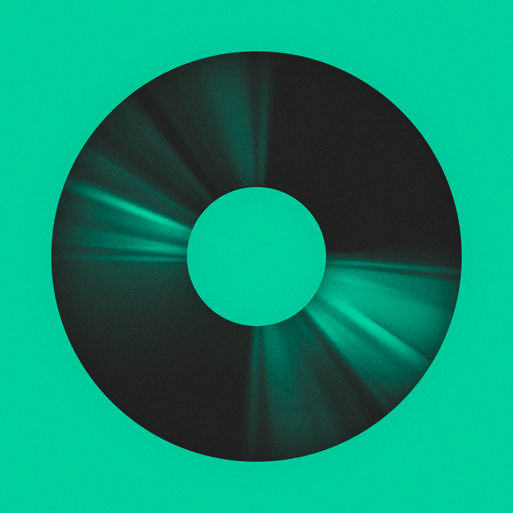

Indie project in active development. You may run into some bugs, especially on Mac and Linux.
Thousands of scattered and lost sound files? MySoundLib fixes that.
A lightweight, local desktop app to organize your sound library, preview and trim waveforms, and drop audio into your timeline without interrupting your edit.
How It Works
Finding the right sound takes too many steps. MySoundLib makes it one shortcut.
Alt + Shift + F over Premiere, DaVinci, or CapCut opens a search bar for your libraries. No window switching.
Select just the part of the waveform you need and drag it straight into your timeline.
No interruptions, and a clean project: only the trimmed sound goes in.
Works with whatever you already use to edit
No plugins needed. If your software accepts dragged files, it works directly.
QuickSearch Overlay
Search sounds over your timeline.
Hit Alt + Shift + F over Premiere, DaVinci, or CapCut. Search, audition sounds instantly, and drop audio straight into your track without leaving your editor.
- 01 Global hotkey: pops up over any editor.
- 02 Fast search: indexes large local libraries in milliseconds.
- 03 Quick filters: filter by format, channels, or custom tags.
Your Library, Your Way
Import your own files and organize them your way.
Bring in your own sound files, create as many libraries as you want, and organize everything the way that fits your workflow.
- 01 Import your files: add your own sounds from any folder on your computer.
- 02 Multiple libraries: create separate libraries for SFX, music, memes or any project.
- 03 Your organization: arrange sounds with your own folders and tags.
Built-in Converter
Convert unplayable audio without leaving your edit.
Downloaded an .opus voice note or a web rip that your editor refuses to import? Convert it straight to clean WAV or MP3 before dragging it to your timeline, without opening external tools.
- 01 Broad format support: handles OPUS, FLAC, OGG, M4A, AIFF, MP3, and WAV with zero fuss.
- 02 Batch processing: convert individual tracks or clean up an entire folder in seconds.
I spent years digging through messy sound packs. Then I built the tool I actually needed.Why I Built MySoundLib

About
Built by a video editor, for video editors
I spend most of my workdays editing in Premiere Pro and After Effects. Over the years, my sound library grew to tens of gigabytes across messy folders. Most dedicated audio managers were either built for large post-production studios or required monthly subscriptions just to search local files.
I built MySoundLib to solve that bottleneck on my own edits. The goal was simple: hit a shortcut over your editor, find what you need, and drop the exact slice right onto your timeline. Your files stay on your machine, and you own the app for life.
Frequently Asked Questions
Questions & Answers
Which editors and DAWs are supported?
Premiere, DaVinci Resolve, CapCut, After Effects, Final Cut, and Vegas Pro. If your software accepts files dragged from your desktop, it works.
Does dragging snippets modify my original audio files?
No. Trimming is non-destructive. The app creates a temporary clip for your timeline and leaves your original audio files untouched.
Is it a lifetime license or a subscription?
One-time payment. During Early Access you pay $9.50 once (50% off the regular $19) and own MySoundLib with all updates included. No subscriptions.
How does the QuickSearch Overlay work?
Press Alt + Shift + F (or Option + Shift + F on macOS) while editing. The search bar opens over your screen, you preview sounds immediately, drag the clip into your timeline, and return to editing.
Are my sound files uploaded anywhere?
No. MySoundLib runs entirely on your computer. Your audio libraries, folder paths, and project files never leave your machine.
Which audio formats can it read and convert?
MySoundLib reads and indexes OPUS, WAV, MP3, FLAC, OGG, M4A, and AIFF. You can convert any of these formats — especially web-downloaded .opus files that video editors refuse to open — into editor-compatible WAV, MP3, FLAC, OGG, or M4A individually or in batch.
Can I organize sounds into separate libraries?
Yes. You can create separate libraries for personal projects, client work, or specific sound packs.
Can I use my license on multiple computers?
Yes. Your license is for your personal use, allowing you to activate it across your own computers (such as your desktop workstation and laptop). Sharing with third parties is not permitted; automated fair-use thresholds apply, and if an unusually high number of activations is detected, simply contact support@mysoundlib.com.
Does MySoundLib come with sound effects or music?
No. MySoundLib is purely an audio manager and workflow tool. It indexes and searches audio files already on your computer or sound packs you buy or download separately. We do not distribute or license audio files.
Stop digging through folders. Keep editing.
Lifetime license, zero subscriptions, and 100% offline on your machine. Compatible with Windows, macOS, and Linux.
Buy MySoundLib